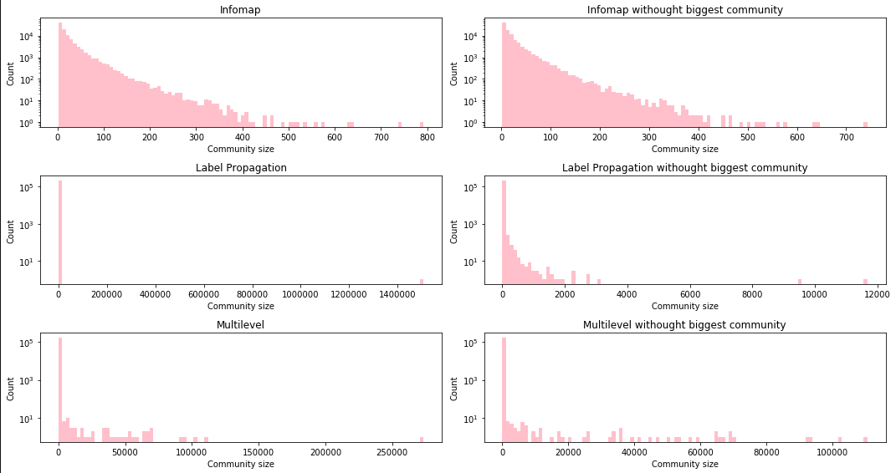

DBLP Graph
DBLP is a computer science bibliography website. It contains information about scientific papers, authors, venues of publication and so on.
We present analysis of co-authorship graph built from DBLP xml dump from 14 Oct 2019.
Graph size
| Publications | 4 809 168 |
| Authors | 2 436 603 |
| Venues | 18 085 |
| Citations | 172 576 |
| Co-authorship edges | 12 284 722 |
Coauthorship edges are weighted. Their weights represent number of papers coauthored by two authors.
Community detection on whole graph
Clustering Metrics - Modularity
fraction of the edges that fall within the given groups minus the expected fraction if edges were distributed at random.
Methods
We compare three methods of community detection.
- Label propagation
- Multilevel / Louvain method
- Infomap
Label propagation - intuition
Photo from https://dzone.com/articles/graph-algorithms-in-neo4j-label-propagation
Label propagation results
Label propagation algorithm delivered mediocre results in terms of even community size distribution. Poor results persisted even after 3 recursive runs. Most of nodes (62%) were grouped in single community.
| Community size | Percentage of all nodes |
| 1506701 | 0.6201630442835716 |
| 9506 | 0.003912700594849032 |
| 2798 | 0.001151665923036776 |
| 1822 | 0.0007499411407337405 |
| 794 | 0.00032681298888177275 |
| 717 | 0.00029511953781893077 |
| 563 | 0.0002317326356932469 |
| 505 | 0.00020785964658097636 |
| 460 | 0.00018933749985593885 |
| 454 | 0.00018686788029260052 |
| 451 | 0.00018563307051093137 |
Multilevel - intuition
Multilevel results
Multilevel algorithm delivered acceptable results in terms of even community sizes. Biggest community contains 11% of all nodes.
| Community size | Percentage of all nodes |
| 273536 | 0.112588 |
| 110684 | 0.045558 |
| 102391 | 0.042144 |
| 93268 | 0.038389 |
| 92316 | 0.037998 |
| 70787 | 0.029136 |
| 69693 | 0.028686 |
| 69407 | 0.028568 |
| 66543 | 0.027389 |
| 66364 | 0.027316 |
Infomap intuition
Photo from https://www.mapequation.org/publications.html
Infomap results
Infomap algorithm delivered even more even community size distribution. Biggest community contains 0.03% of all nodes. 11% of nodes were not assigned to any community.
| Community size | Percentage of all nodes |
| 792 | 0.000326 |
| 743 | 0.000306 |
| 641 | 0.000264 |
| 632 | 0.000260 |
| 578 | 0.000238 |
| 559 | 0.000230 |
| 534 | 0.000220 |
| 521 | 0.000214 |
| 515 | 0.000212 |
Community sizes distribution

Comparison
In case of DBLP processing we have shown that using infomap algorithm proven to yield most even community size distribution. Infomap communities are usually small enough to characterize their topic or reason about their other characteristics.
State-of-the-art methods
Particle method
We’ve a method introduced in:
Quiles, Marcos & Macau, Elbert & Rubido, Nicolás. (2016).
Dynamical detection of network communities.
Scientific Reports. 6. 25570. 10.1038/srep25570.
The particle method treats every node as a particle which interacts with other particles with attractive and repulsive forces. Parameters \(\alpha\) and \(\beta\) represent strength of each interaction.
In the following section we present a summary of how it compares to other commonly used algorithms we assume \(\alpha = 1\) and we change \(\beta\) parameters.
Community detection on part of DBLP graph
We used smaller graph (624 nodes) to see how the particle method compares to other algorithms.
Basic methods - community sizes
Particle - community sizes
Community size differ significantly depending on what values of hyperparameters we choose.
Comparison
| Infomap | Multilevel | Label propagation | PM b=0.01 | PM b=0.1 | PM b=0.2 | PM b=0.3 | |
| Modularity | 0.55 | 0.58 | 0.45 | 0.33 | 0.57 | 0.57 | 0.53 |
| Communities count | 50 | 15 | 39 | 4 | 31 | 25 | 44 |
| Community avg size | 12.48 | 41.6 | 16.0 | 156.0 | 20.12 | 24.96 | 14.18 |
| Community size std | 14.0 | 32.0 | 44.0 | 45.0 | 17.0 | 22.0 | 14.0 |
| Community max size | 63.0 | 105.0 | 272.0 | 187.0 | 66.0 | 67.0 | 63.0 |
- PM: Particle method
We can see that multilevel method reaches best modularity, as it is the metric that this method optimizes, though infomap and particle method for certain beta parameters reach similar results.
Eu-Mail
- The network generated using email data from a large European research institution, anonymous,
- 1005 Nodes,
- 25571 Edges,
- (u,v) edge - if u sent v at least one email,
- the dataset also contains “ground-truth” community memberships of the nodes, “ground-truth” communities are 42 departments at the research institute.
Ground truth comminutes
Community size distribution - basic methods
Community size distribution - particle method
Comparison
| Descriptior | Ground truth | Infomap | Multilevel | Label propagation | PM b=0.05 | PM b=0.1 | PM b=0.2 | PM b=0.3 |
| Modularity | 0.32 | 0.06 | 0.44 | 0.0 | 0.21 | 0.25 | 0.35 | 0.34 |
| Communities count | 42 | 329 | 26 | 33 | 21 | 16 | 53 | 62 |
| Community avg size | 23.93 | 3.05 | 38.65 | 30.45 | 47.86 | 62.81 | 18.96 | 16.21 |
| Community size std | 24.22 | 1.72 | 72.93 | 169.2 | 106.79 | 111.44 | 40.08 | 36.21 |
| Community max size | 109.0 | 15.0 | 245.0 | 973.0 | 484.0 | 422.0 | 216.0 | 188.0 |
- PM - particle method
Overlapping communities
Reduced graph
To detect overlapping communities we run infomap algorithm with enabled overlapping. Due to scarce computing resources we had to run it on reduced graph to obtain results in reasonable time.
Reduced graph was created from all nodes at most 4 nodes away from certain person working on AGH UST.
This subgraph contains 393 202 authors, that is 2.7% of all nodes and 4 161 672 coauthorships, that is 33.8% (yes, that’s not a mistake) of all edges. If we consider edge weights subgraph contains 41.3% of all coauthorship weights.
Communities
Communities in reduced subgraph were a lot smaller than ones in whole DBLP graph.
| Quantile | Community size |
| 0.600 | 1.0 |
| 0.700 | 2.0 |
| 0.800 | 3.0 |
| 0.900 | 4.0 |
| 0.990 | 13.0 |
| 0.999 | 30.0 |
| 1.000 | 52.0 |
Overlap Size
Community overlap was rather small. Maximal overlap percentage was 13%.
| Size A | Size B | Overlap size | Overlap percentage |
| 36.0 | 41.0 | 9 | 0.132353 |
| 47.0 | 23.0 | 5 | 0.076923 |
| 51.0 | 31.0 | 5 | 0.064935 |
| 42.0 | 47.0 | 5 | 0.059524 |
| 18.0 | 22.0 | 2 | 0.052632 |
| 22.0 | 20.0 | 2 | 0.050000 |
| 47.0 | 20.0 | 3 | 0.046875 |
| 22.0 | 24.0 | 2 | 0.045455 |
| 52.0 | 47.0 | 4 | 0.042105 |
| 18.0 | 16.0 | 1 | 0.030303 |
| 47.0 | 22.0 | 2 | 0.029851 |
| 22.0 | 20.0 | 1 | 0.024390 |
| 63.0 | 23.0 | 2 | 0.023810 |
Overlap size - histogram
Biggest overlap
Biggest overlap - overview
Biggest overlap - different layout
We can see that most of connections between orange and purple communities are through their overlap - green nodes.
Biggest overlap - community summary
We summarized both communities and their intersection using words in titles of papers written by members of specific communities.
Comparison (tf-idf)
| Community1 (w-out intersection) | Community2 (w-out intersection) |
| Intersection |
Comparison - difference in normalized count
We subtracted percentages of keywords in one community from percentages in other community, hopefully leaving us with different keywords for each community.
| Community1 (w-out intersection) | Community2 (w-out intersection) |
 |
| Intersection |
Conclusion
We can see (or at least imagine) that Community1 is focused on computer networks on higher level (data, internet, security) and Community2 is focused on more technical and low-level aspects of telecommunication (MIMO, channel, frequency). And intersection joins the two (MIMO, but also algorithm, programming, wiretap) leaning towards Community2.
Missing link prediction
Intro
Missing link prediction is an attempt to infer creation of new edges in network based on previously created connections. We will briefly describe and show our attempt at link prediction on dblp graph.
Split
To split data correctly we decided to split it by years considering the fact that previous coauthorships contribute to birth of new ones.
We have plotted normalized cumulative sum of all coauthorships to split dataset at desired percentage. It was decided to use year 2016, so that our trait-test split is 72% to 28%.
Positive and negative samples
- positive samples class : existing edges
- negative samples class: are close and don’t have edges, require downsampling due to class imbalance between positive and negative classes
Generating samples
// Positive samples MATCH (author:person)-[:COAUTHORS_LATE]->(other:person) RETURN id(author) AS node1, id(other) AS node2, 1 AS label // Negative samples MATCH (author:person)-[:COAUTHORS_LATE]->(other:person) MATCH (author:person) WHERE (author)-[:COAUTHORS_LATE]-() MATCH (author)-[:COAUTHORS_LATE*2..3]-(other) WHERE not((author)-[:COAUTHORS_LATE]-(other)) RETURN id(author) AS node1, id(other) AS node2, 0 AS label limit $limit
Basic Features
As link prediction features we have chosen
- Common neighbors
- total unique neighbors who have connection to both nodes
- Preferential attachment
- product of the degree of each node
- Total neighbors
- total unique neighbors of either of nodes
Additional features
We created additional features by using clustering coefficient and triangle count of each node on edge.
- triangle count
- min and max from both edge vertices
- clustering coefficient
- min and max from both edge vertices
Results
To predict missing links we have used random forest classifier.
Let’s review model performance metrics.
Prediction types
|
|
Predicted Negative (0) |
Predicted Positive (1) |
|
Actual Negative (0) |
TrueNeg |
FalsePos |
|
Actual Positive (1) |
FalseNeg |
TuePos |
- True / False part refers to equality between actual and predicted.
- Positive / Negative refers to predicted class.
Model performance metrics
| Accuracy | \(\frac{TruePos + TrueNeg}{AllPredictions}\) |
| Precision | \(\frac{TruePos}{TruePos + FalsePos}\) |
| Recall | \(\frac{TruePos}{TruePos + FalseNegative}\) |
| F1-score | \(2* \frac{Precision * Recall}{Precision + Recall}\) |
Basic features
Best classifier performance on just basic features (common neighbors, preferential attachment total neighbors) was found with 40 estimators and max tree depth 2.
Accuracy: 97.01%
| precision | recall | f1-score |
| 0.96 | 0.98 | 0.97 |
Basic features - feature importance
| feature | importance |
|---|---|
| Common neighbors | 0.530007 |
| Total neighbors | 0.398644 |
| Preferential attachment | 0.071349 |
With clustering coefficient
When using all features we had to use bigger model to gain similar results (200 estimators and max tree depth 3) Accuracy: 96.40%
| precision | recall | f1-score |
| 0.94 | 0.99 | 0.97 |
With clustering coefficient - feature importance
| feature | value |
|---|---|
| Common neighbors | 0.489987 |
| Min cl. coef. | 0.150797 |
| Max triangles | 0.140900 |
| Total neighbors | 0.095948 |
| max cl. coef. | 0.086005 |
| Preferential attachment | 0.020361 |
| Min triangles | 0.016002 |
Results - Conclusion
We can see that using right models we can achieve pretty high accuracy in missing link prediction task. We observed that Common neighbors is the most important feature among ones we used, and degrees of nodes (preferential attachment) are of low importance.
Appendix
Algorithm implementations used
- Infomap: https://www.mapequation.org/code.html
- Multilevel, Label Propagation: Neo4J
- Infomap, Multilevel, Clustering Coefficient, modularity score: igraph (python-igraph):
- Particle method: https://github.com/quiles/ParticleCommunity